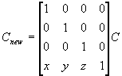

#include <nitro/gx/g3imm.h>
#include <nitro/gx/g3b.h>
#include <nitro/gx/g3c.h>
void G3_Translate(fx32 x, fx32 y, fx32 z);
// 以下ディスプレイリスト（コマンド列）作成用API
void G3B_Translate(GXDLInfo* info, fx32 x, fx32 y, fx32 z);
void G3C_Translate(GXDLInfo* info, fx32 x, fx32 y, fx32 z);
void G3BS_Translate(GXDLInfo* info, fx32 x, fx32 y, fx32 z);
void G3CS_Translate(GXDLInfo* info, fx32 x, fx32 y, fx32 z);| info | コマンドリスト情報 |
| x | x軸方向の移動量 |
| y | y軸方向の移動量 |
| z | z軸方向の移動量 |
なし。
カレント行列に平行移動行列を左から乗算します。行列の各要素は、符号付き固定小数点数で、符号+整数部19ビット+
小数部12ビットとなります。
カレント行列をCとすると、新しいカレント行列Cnewは以下の式のとおりです。

※G3OP_MTX_TRANSコマンドは通常22サイクル、Position&Vectorモード時はには52サイクルの実行サイクルを必要とします。下のように3x3行列の乗算とセットにしする事によって、G3OP_MTX_TRANSを使用せずにより効率よく処理させることも可能です。 なおG3_*MultTransMtx33でも同様の処理を行ないます。
struct {
MtxFx33 mtx;
VecFx32 trans;
} mtx43;
G3*_MultMtx43( (MtxFx43*)(&mtx43) );
G3*_MtxMode, G3*_Identity, G3*_LoadMtx43, G3*_LoadMtx44, G3*_MultMtx43, G3*_MultMtx44, G3*_MultMtx33, G3*_PushMtx, G3*_PopMtx, G3*_StoreMtx, G3*_RestoreMtx, G3*_Scale, G3_*MultTransMtx33
Ver. 2004/07/26 3x3行列乗算とのパックによる高速化についての記述を追加
Ver. 2004/01/19 初版